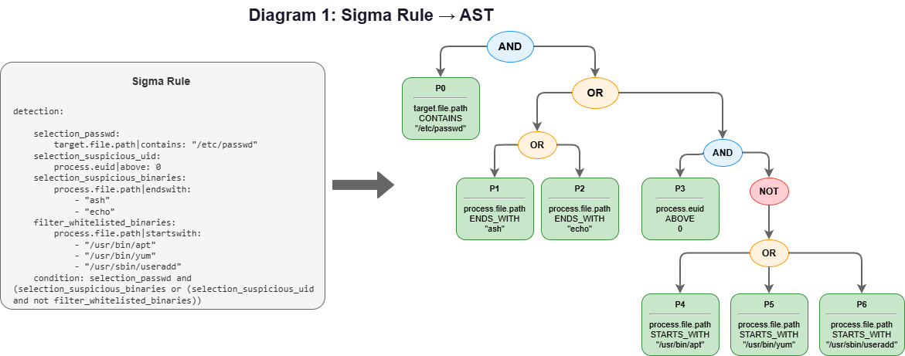
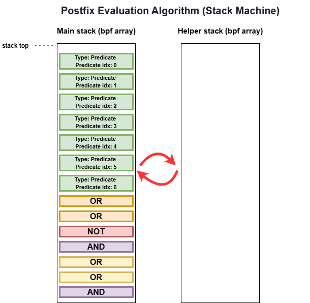

How we compiled Sigma Rules into a stack-based expression
evaluator running inside the Linux kernel.
Sigma Rules look deceptively simple. A YAML file with some field
names, a few string matches, and a condition like
selection and not filter. Easy to read. Easy to write.
But try evaluating that logic inside an eBPF LSM hook — where you’re on the critical path of different syscalls and need to make a block/allow decision as efficiently as possible — and things get complicated fast.
Consider what a real Sigma Rule condition can look like:
# See full rule below
condition: selection_passwd and (selection_suspicious_binaries or (selection_suspicious_uid and not filter_whitelisted_binaries))That’s nested boolean logic with ANDs, ORs, NOTs, and parentheses.
Each selection_* expands into multiple field comparisons —
string contains, starts-with, numeric comparisons. The full expression
tree can have dozens of nodes.
Now try running that inside the eBPF verifier’s constraints: no recursion, no unbounded loops, 512-byte stack limit, and every memory access must be bounds-checked. Traditional expression evaluation techniques don’t work here.
This post describes how we solved it in owLSM, an
open-source stateful Sigma Rule Engine implemented via eBPF LSM. The
pipeline compiles Sigma Rules into a kernel-evaluable format that runs
in under a microsecond per syscall.
Let’s trace a specific rule through the entire pipeline. This
rule blocks unauthorized write attempts to /etc/passwd:
# More sigma metadata ...
description: "Block unauthorized /etc/passwd modifications"
action: "BLOCK_EVENT"
events:
- WRITE
detection:
selection_passwd:
target.file.path|contains: "/etc/passwd"
selection_suspicious_uid:
process.euid|gt: 0
selection_suspicious_binaries:
process.file.path|endswith:
- "ash"
- "echo"
filter_whitelisted_binaries:
process.file.path|startswith:
- "/usr/bin/apt"
- "/usr/bin/yum"
- "/usr/sbin/useradd"
condition: selection_passwd and (selection_suspicious_binaries or (selection_suspicious_uid and not filter_whitelisted_binaries))tttThe rule combines:
contains)endswith)startswith)gt)
This needs to evaluate inside a kernel hook. Here’s how we made
it work.
The detection logic is parsed into an Abstract Syntax Tree (AST)
using pySigma, the
official Sigma rule processing python library. We implemented a custom
pySigma Backend that, extracts data from the AST and builds tables that
will later be converted to bpf maps.

Each leaf node in the AST is an atomic
predicate — a single field comparison:
| Predicate | Field | Comparison | Value |
|---|---|---|---|
| P0 | target.file.path |
CONTAINS | “/etc/passwd” |
| P1 | process.file.path |
ENDS_WITH | “ash” |
| P2 | process.file.path |
ENDS_WITH | “echo” |
| P3 | process.euid |
ABOVE | 0 |
| P4 | process.file.path |
STARTS_WITH | “/usr/bin/apt” |
| P5 | process.file.path |
STARTS_WITH | “/usr/bin/yum” |
| P6 | process.file.path |
STARTS_WITH | “/usr/sbin/useradd” |
As pySigma walks the detection section, we build two deduplicated lookup tables:
|
|
|
Predicates, strings and IP addresses are
deduplicated across rules. If 10 different rules all
check target.file.path contains "/etc/passwd", that
predicate and “/etc/passwd” are stored once and referenced by index
everywhere. This deduplication is critical — it reduces kernel memory
and enables predicate result caching.
We need to evaluate the AST inside eBPF, but:
The solution: convert the AST to postfix
notation (Reverse Polish Notation). Postfix expressions can be
evaluated with a single linear pass using a fixed-size stack — no
recursion, no operator precedence logic, no parentheses needed at
evaluation time.
We use infix-to-postfix conversion via tree traversal. The specific traversal order is determined by the pySigma backend implementation.
Our example rule produces this postfix sequence:
P0 P1 P2 P3 P4 P5 P6 OR OR NOT AND OR OR ANDEach element in the postfix sequence is converted to a token — a small struct containing:
operator_type: PREDICATE, AND, OR, or NOTpredicate_idx: (only for PREDICATE tokens) index into
the predicate tableThe lookup tables and token arrays are serialized into JSON:
{
"id_to_string": {
"0": { "value": "/etc/passwd", "is_contains": true },
"1": { "value": "ash", "is_contains": false },
"2": { "value": "echo", "is_contains": false },
"3": { "value": "/usr/bin/apt", "is_contains": false },
"4": { "value": "/usr/bin/yum", "is_contains": false },
"5": { "value": "/usr/sbin/useradd", "is_contains": false }
},
"id_to_predicate": {
"0": { "field": "target.file.path", "comparison_type": "contains", "string_idx": 0 },
"1": { "field": "process.file.path", "comparison_type": "endswith", "string_idx": 1 },
"2": { "field": "process.file.path", "comparison_type": "endswith", "string_idx": 2 },
"3": { "field": "process.euid", "comparison_type": "above", "numerical_value": 0 },
"4": { "field": "process.file.path", "comparison_type": "startswith", "string_idx": 3 },
"5": { "field": "process.file.path", "comparison_type": "startswith", "string_idx": 4 },
"6": { "field": "process.file.path", "comparison_type": "startswith", "string_idx": 5 }
},
"id_to_ip": {},
"rules": [
{
"id": 42,
"description": "Block unauthorized /etc/passwd modifications",
"action": "BLOCK_EVENT",
"applied_events": ["WRITE"],
"tokens": [
{ "operator_type": "OPERATOR_PREDICATE", "predicate_idx": 0 },
{ "operator_type": "OPERATOR_PREDICATE", "predicate_idx": 1 },
{ "operator_type": "OPERATOR_PREDICATE", "predicate_idx": 2 },
{ "operator_type": "OPERATOR_PREDICATE", "predicate_idx": 3 },
{ "operator_type": "OPERATOR_PREDICATE", "predicate_idx": 4 },
{ "operator_type": "OPERATOR_PREDICATE", "predicate_idx": 5 },
{ "operator_type": "OPERATOR_PREDICATE", "predicate_idx": 6 },
{ "operator_type": "OPERATOR_OR" },
{ "operator_type": "OPERATOR_OR" },
{ "operator_type": "OPERATOR_NOT" },
{ "operator_type": "OPERATOR_AND" },
{ "operator_type": "OPERATOR_OR" },
{ "operator_type": "OPERATOR_OR" },
{ "operator_type": "OPERATOR_AND" }
]
}
]
}This JSON becomes part of the configuration passed to the userspace
component at startup.
Now we will see how the userspace component
deserializes the json and uses it to populate bpf maps.
Before anything reaches the kernel, the userspace component loads the JSON and pre-computes everything it can.
The CONTAINS comparison needs substring search.
The
naive O(n×m) approach is too slow for inline syscall evaluation.
KMP
(Knuth-Morris-Pratt) gives us O(n), but standard KMP uses a failure
function with conditional branches — problematic in eBPF where we want
predictable execution.
We build a complete DFA transition table — a 2D
array where dfa[state][character] gives the next state
directly. No conditionals, no failure-function chasing.
For the pattern “/etc/passwd”, the DFA has states 0 through 11
(pattern length), and each state has 256 entries (one per possible byte
value).
Reaching the final state means the pattern was found.
The trade-off is memory: each DFA is a fixed 256 × 256
byte array. This is a significant memory cost, but the guarantee of
worst-case O(n) substring functionality which is verifier friendly, is
worth it for inline syscall evaluation.
Rules are stored in per-event-type bpf arrays. A
rule with events: [WRITE] is only inserted into
write_rules.
When a WRITE syscall fires, the kernel
iterates only over write_rules — never touching
READ, EXEC, or NETWORK rules.
A rule can specify multiple event types (e.g.,
events: [CHMOD, CHOWN, READ, WRITE]) and will be inserted
into all relevant maps. We won’t expand on multi-event rules in this
post.
After pre-computation, userspace populates the BPF maps:
predicates_map — Global predicate table. equivalent to
id_to_predicate.rules_strings_map — String values with length and DFA
index. equivalent to id_to_string.idx_to_DFA_map — Pre-computed KMP DFAs for
contains stringsrules_ips_map — IP addresses in binary form with CIDR
masks. Not talked about in this post.{event}_rules — Per-event-type rule arrayspredicates_results_cache — Predicate result cache
(per-CPU)
After populating the maps, the userspace attaches the eBPF
probes.
When a WRITE syscall fires, the eBPF hook runs.
First, the hook populates an event struct with all relevant
context:
target.file.path = “/etc/passwd”, process.euid
= 1000 and dozens of other event fields.
The event timestamp is also captured here — this becomes important for
predicates_results_cache.
We use the reverse Polish notation evaluation
algorithm. This is the standard algorithm for evaluating
postfix expressions — it’s O(n) in the number of tokens and requires
only 2 small fixed-size stacks.
We implemnted the stacks using bpf arrays. Implementing
top, pop, push,
empty functions.

After processing all tokens, the stack contains exactly one value: the final result.
When we need to evaluate a PREDICATE token, we:
predicate_idx from the tokenpredicates_results_cachepredicates_map[predicate_idx]predicates_results_cache
### Predicate Result Caching
The same predicate often appears in multiple rules.
Without
caching, we’d evaluate
target.file.path contains "/etc/passwd" once per rule —
potentially dozens of times.
We maintain a predicates_results_cache per-CPU BPF hash
map.
But how do we invalidate it between events without expensive
cleanup?
Timestamp-based invalidation: Each cache entry
stores the event timestamp alongside the result.
When checking the
cache:
This works because:
This guarantees that within a single event, all cache lookups see
consistent timestamps. When the next event arrives, it has a higher
timestamp, automatically invalidating all previous entries without any
explicit cleanup.
cached_result = get_cached_result(predicate_idx, current_event_timestamp);
if (cached_result != UNKNOWN)
return cached_result;
result = evaluate_predicate(predicate_idx, event);
cache_result(predicate_idx, result, current_event_timestamp);
return result;Rules are stored sorted by ID (lowest first).
When a rule
matches, evaluation stops immediately — Rule 1 is evaluated before Rule
100.
This differs from most Sigma Rules Engines that always evaluate
all rules and aggregate results. For inline enforcement where
microseconds matter, early exit is critical.
This post focused on the core algorithm chain.
We explicitly
didn’t cover many things like: fieldref, keywords, IP matching, and many
more cool features.
Let me know if you’d like to hear about how we
solved these.